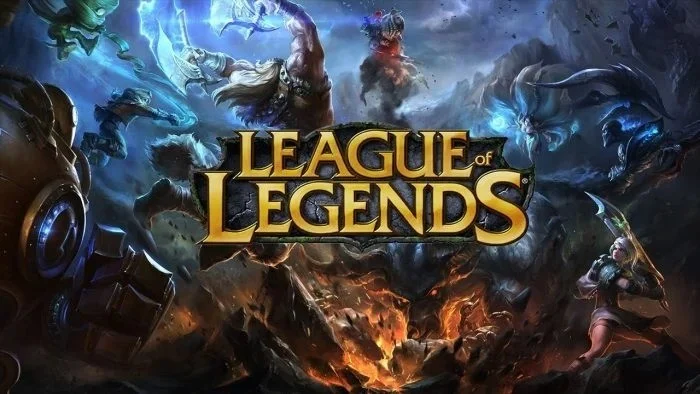

League of Legends recebe atualização com mudanças importantes
A Riot Games anunciou ajustes em campeões, itens e modos de jogo.A Riot Games lançou uma nova atualização para League of Legends, trazendo mudanças significativas no balanceamento de campeões, além de correções de bugs e melhorias gerais de desempenho.
Entre os destaques estão ajustes em personagens populares do competitivo, mudanças em itens estratégicos e atualizações em mecânicas que influenciam diretamente as partidas ranqueadas.
Segundo a desenvolvedora, o objetivo é tornar as partidas mais equilibradas e diversificar as escolhas dos jogadores durante os confrontos.
A atualização também trouxe melhorias na interface e correções para problemas relatados pela comunidade nas últimas semanas.
Jogadores profissionais e criadores de conteúdo já começaram a testar as mudanças, compartilhando análises e opiniões sobre os impactos que elas podem causar no meta atual.
A Riot informou que continuará monitorando os resultados da atualização e poderá realizar novos ajustes em patches futuros.
⬅ Voltar